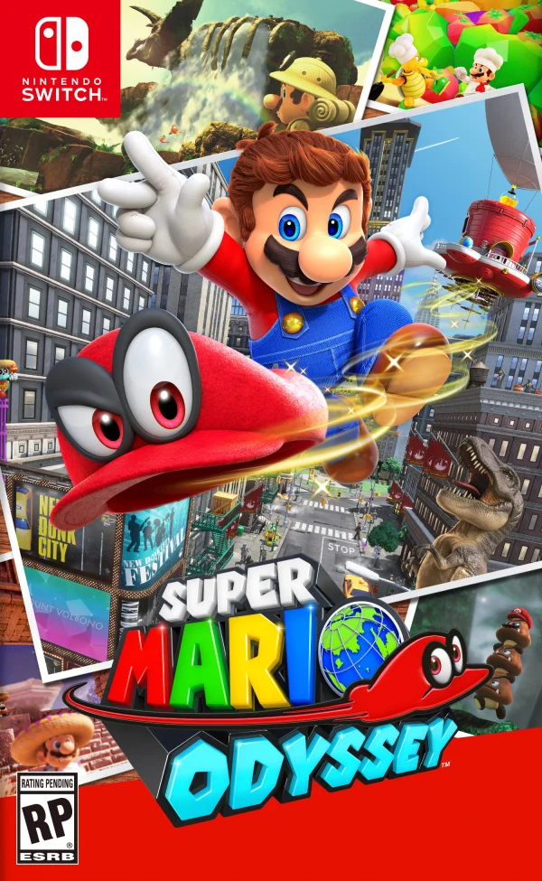
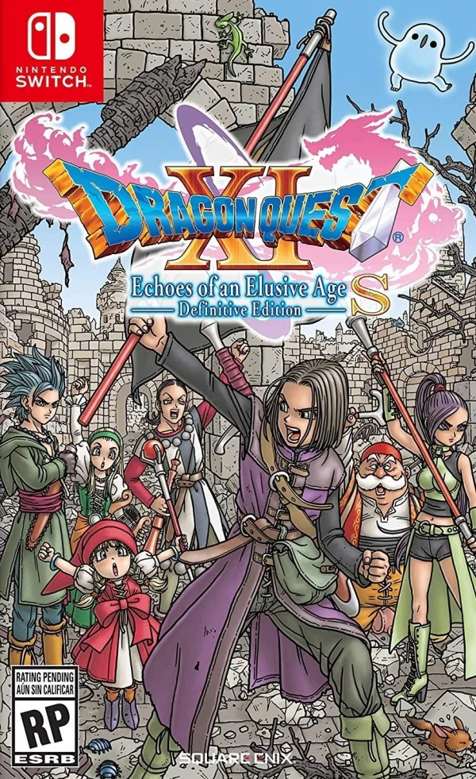
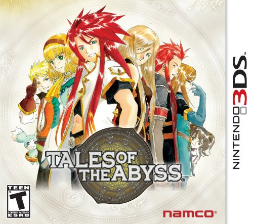
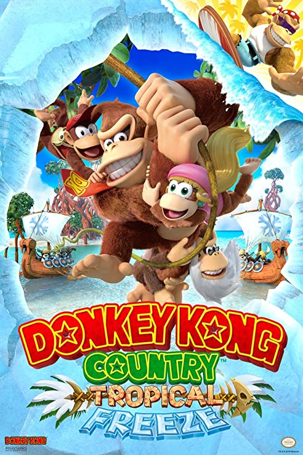

During my childhood, one of my favorite things to do was play video games. To this day I still play video games very often, and I've finally reached a point where I feel like I've played enough games to make a genuine list of my top 10 favorite games of all time. Throughout this list, I attempted to keep it as diverse as possible by not reusing any video game series. I placed this restriction because otherwise, my list would be rather boring as it would only be full of The Legend of Zelda, Metroid, and Dragon Quest. Before I get started I would like to give a few honorable mentions:
Donkey Kong Country 2: Diddy's Kong Quest
DOOM (1993)
Dragon Quest V: Hand of the Heavenly Bride
Hollow Knight
Mega Man X
Mega Man ZX Advent
Pokemon Black 2
Super Metroid
The Legend of Zelda: The Wind Waker HD
The Legend of Zelda: Twilight Princess HD
Now that the introduction is out of the way, I will be starting with my 10th favorite video game of all time!
10. Hades
Hades was not a game that one would expect me to play. I've never been interested in the roguelite genre as I don't see the appeal of doing hundreds of runs without anything of substance (such as story progression). However, Hades goes against most roguelites and provides meaningful changes after each run until you've completed the story and every side quest. This aspect alone got me to play the game, and I'm glad it did. Hades is great because of its story progression, gameplay, and permanent upgrades.
STORY
Not only does the game make you want to play because of its story, but its gameplay does as well. The controls are essentially five things. You have a default attack and a special attack for your weapon. Then you have a dash to dodge enemies, a cast that lets you use spells, and a call for a God to assist you. Throughout the run, you can enhance each of these parts of your toolkit to become stronger by getting boons from various Gods from Mount Olympus. In the case of the call, it is required that you get a boon first before you can even use it. Each God has their own gimmick which gives you countless combinations that you can try out throughout the game. My overall favorite boons were from Zeus and Dionysus because I enjoyed how the former became very strong if you kept picking his boons, while the latter was strong if you combined his boons with those of the other Gods. The weapon diversity in the game is pretty good as well, as you have six distinct ones that you can utilize, albeit that you only start with the Stygian Blade and have to unlock the other five. On top of these six weapons, each has three other forms that can be unlocked which changes how you play. Personally speaking, my favorite weapon in the game was the Aspect of Rama, which allows you to shoot in three directions with your default attack and tag multiple enemies with your special. Tagging enemies allows you to hit all of them when using your default attack, even if you only hit one enemy. After completing your first ever run, you can make the game more difficult with various conditions which create even more gameplay diversity. The core gameplay is basic, but it works very well due to how much can be changed to keep every run interesting and fun.
Due to Hades being a rougelite, there is a way to permanently increase the capabilities of your character, Zagreus. This can be done by going to Zagreus's bedroom and activating the "Mirror of Night". From here you can unlock many different capabilities such as an extra dash, more health, and even a revive when you die. I feel like this was one of the strongest aspects of the game because if you were you still had something to look forward to all the time: upgrading yourself and becoming stronger. This feature was very motivating for me and helped push me to keep playing until I completed my first ever run. Without this feature, I think that I would either not like this game as much as I do or would have dropped it completely.
Even though I don't typically enjoy the rougelite genre, Hades was a game that completely captivated me. I enjoyed playing through it so I could see the plot and side quests unfold. The gameplay stayed fun the entire time due to the amount of diversity implemented through boons, weapons, and difficulty options. Being able to upgrade your character was the cherry on top to motivate you to keep playing even if you were struggling. Hades is a superb game that I would recommend to anyone as I enjoyed it to completion even though it's from a genre I don't like.
8. Super Mario Odyssey

Super Mario Odyssey is my favorite Mario game of all time. However, I do have to admit that I have yet to play Super Mario World and Super Mario Galaxy 2. With that said, what I think makes Super Mario Odyssey so great are three things. These are the controls, the captures (transformations), and the number of Power Moons to collect.
The controls of this game allow Mario to move the freest he's ever been. Mario's basic movement keeps many staples from previous games, such as his long jump, triple jump, and backflip. None of these things stand out as differences, so why is Mario Odyssey's movement so good? The answer is because of Mario's companion Cappy, who serves as his hat for the game. Cappy allows Mario to do many maneuvers that he previously could not. For example, Mario can now perform a sideways somersault, throw his hat, dive towards his hat, land on his hat, and then roll quickly along the floor in a few seconds. This simple addition makes traversing across all the different areas in the game constantly fun and engaging because you can move so fast that you don't care if something is far away.
A staple of Mario games is the power-ups that Mario can use, such as the well-known Fire Flower. Mario Odyssey takes a unique approach to Mario's power-ups by allowing Mario to transform after capturing an animal, enemy, or object with Cappy. This mechanic allows for copious abilities you can access at any given time from the environment. I think the greatest strength of this system is that you can make many power-ups without creating new items. Rather than creating some power-up that allows you to be a frog, you can capture a frog and become it. This simple mechanic allows the game to become much more diverse than it would be with Mario's regular power-up system.
The amount of Power Moons in the game is a controversial topic. Throughout the game, you can collect 880 unique Power Moons, and you need these collectibles to access different locations in the game. One side says that there are too many, while the other states that the amount of moons is reasonable. Personally, I agree with those that like the number of moons. In fact, I think that the decision to have so many moons enhances the game. The strongest argument for keeping all the moons is that it allows for more replayability compared to a game with fewer moons. Once you beat the game and put it down, you can continue collecting hundreds of Power Moons across the various worlds, or you can start a new playthrough and collect the moons in an entirely different order than your first time. This game needs to have as many moons as it does because it incentivizes you to play the game more at some point later down the road.
I think Super Mario Odyssey is easily Mario's best adventure yet. It has fast-paced action, plenty of transformations that act as power-ups, and many collectibles in every world. This game is one that any Mario fan or 3D platforming fan should experience.
7. Dragon Quest XI S: Echoes of an Elusive Age - Definitive Edition

Dragon Quest XI is a game that I expected to enjoy as I'm a fan of the Dragon Quest series. However, I did not expect that it would hook me to the point that the only thing I did during my free time was play it until I completed all three acts and every side quest. I loved everything about this game. To pick a few things to talk about, I would say my favorite parts of this game were the characters, the world, and the second act.
Every single main character in this game is absolutely fantastic. The party members in this game are Erik, Veronica, Serena, Sylvando, Jade, Rab, and later someone unexpected. Erik is the thief who becomes your first party member. Veronica and Serena are twins where the former is adamant about what she wants to do (and literally cursed to be short), while the latter is much more reserved and goes along with what her sister wants to do. Sylvando is a man who strives to make the whole world smile. Rab is the main character's grandfather, a former king (also a perv), and Jade is a princess who helped the main character survive when they were a baby. Now, I know that all of this sounds very basic, and it is. However, the execution of each character throughout the game is expertly done: via cutscenes, party dialogue, and plot developments. An example off the top of my head that illustrates this is from the very beginning of the game. Here, you and Erik attempt to escape from Heliodor Castle's dungeon after being imprisoned by King Carnelian; this is because he learns that you are the Luminary, whom he believes is the cause of all calamity. At the end of the escape, Helidor's guards corner you on the edge of a cliff. There is no way to escape except by jumping into the water below. Erik then turns to you, saying, "Let's do this. I believe in you. I believe in the Luminary...I don't have much choice". Both of you then, together, at the same time, jump into the water at the bottom of the cliff. To keep this section from rambling on too much about the characters, I would like to say I also liked Jasper and Hendrik, who are knights of Heliodor and play crucial roles throughout the entire game. The characters of Dragon Quest XI all have their own charm, and you become more attached to each of them as the story unfolds and you see all of their struggles and interactions.
Erdrea is the name of Dragon Quest XI's world and is a joy to explore. Once you set out into the world after the opening sequence, you get a horse, which helps tremendously in traveling the world. The game isn't open world, but it gives you plenty of areas you can explore when you reach different sections of the game, which allows you to choose to do things other than the main story. I love how each area in the game is so distinct. For example, Heliodor is the standard kingdom you envision as soon as you think about one. But then there are areas like Octagonia, which is all about their masked martial arts tournament (and later gambling). Something else that makes exploring Erdrea so fun is that you can choose to fight which monsters you want to. Due to this, the flow of exploration stays strong as you only get into battles by your choice (though sometimes you may get unlucky and get chased down). The world of Dragon Quest XI is enjoyable due to its quick modes of transport, diverse areas, and the ability to choose what fights you want.
Act 2 is, simply put, phenomenal. There were so many things in this part of the game that I did not expect at all. One of those things was Hendrik joining your party as a permanent member and apologizing for thinking that the Luminary was evil and chasing him across Erdrea. In retrospect: I probably should have expected that as you had an uneven number of party members after including yourself: and because Hendrik wasn't evil, but I digress. In this act, you play through each member's specific struggle before meeting them once more, except for the twins, and for a good reason. Without getting too much into it, Veronica died after the events of Act 1. I found this very shocking as this is a Dragon Quest game, and usually, every main character gets a happy ending. Instead, this flips the entire script upside down by depressing every party member, especially Serena. This event is pivotal for Serena's growth, as she can no longer follow her sister; and now has to do things for herself. Serena develops into a much stronger person by the end of Act 2. This act was fantastic because it showed each main character's struggle, each main character's development, and because it was full of events that I did not expect to happen.
Dragon Quest XI is one of the best JRPGs of all time, if not the best. Every main character in the game is fun to watch how they develop and interact with one another. The world offers plenty of exploration opportunities and amplifies exploration by providing fast ways to travel as well as optional battles. Act 2 is a masterclass in storytelling, full of things one would not normally expect from a Dragon Quest game. Dragon Quest XI is a game that I'm happy I spent the time playing because it was so magical.
6. Tales of the Abyss

Intro
P1
P2
P3
Conclusion
5. The Legend of Zelda: Breath of the Wild
Being a Legend of Zelda fan since having played my first Zelda game, Skyward Sword, I was very excited to hear about Breath of the Wild when first announced. Many things about the game stood out in the trailers. They showed Link using a parasail to glide through the sky, Link being able to cut down trees, and how vast this world is compared to previous Zelda titles. I always looked forward to eventually playing this game, and I was finally able to in 2021. It doesn't need to be said, but I will anyway; I enjoyed every second of playing Breath of the Wild.
Breath of the Wild is an open world game that lets you explore anywhere you want, but it doesn't initially start that way. In the beginning, you are on the Great Plateau, and you essentially need to complete the tutorial. Afterward, you can progress to the real meat and bones. The tutorial is about finding these ancient buildings called shrines, which bestow you runes that increase the capabilities of your Sheikah Slate that you received at the very start. Another thing to note about these shrines is that they give you Spirit Orbs used to upgrade your health or stamina. At the end of the tutorial, you obtain a paraglider; the game is then blown wide open, and you have the freedom to go wherever you want. To complement this: there are Sheikah Towers, which serve as landmarks you can teleport to as long as you have activated them. The best aspect of the game is how this allows you total freedom across the map. If you headed off to the Gerudo Desert initially like I did in my first playthrough, but then decide you want to go elsewhere while keeping your progress: you teleport back to the Great Plateau after activating a Sheikah Tower in the desert. Exploration is Breath of the Wild's bread and butter, and it handles it masterfully.
Shrines are the biggest reward for exploration, and in total, there are 120 of them to be found throughout the game. In terms of what each shrine holds, there are three archetypes that they can fall under: blessings, tests of strength, and puzzles. The blessing archetype has nothing for you to do except to receive your Spirit Orb, which typically occurs after you had to solve some puzzle outside of the shrine. The tests of strength have you fight a Guardian Scout of one of three difficulties - minor, modest, major. The puzzles make you solve something before you obtain your reward. I loved finding each of these shrines and seeing what was within each of them. My favorite shrine was the one on Eventide Island; you had to figure out a way to defeat enemies and solve a puzzle after losing all of your equipment other than the Sheikah Slate and paraglider. Shrines are key in Breath of the Wild as they are one of the main motivations to explore.
The Sheikah Slate plays an integral role in making Breath of the Wild great, as it provides a single tool with multiple purposes that can solve various puzzles in numerous ways. The slate offers four diverse functions: Magnesis, Remote Bomb, Stasis, and Cryonis. Magnesis allows you to move metallic objects. The Remote Bomb can either be round or cube-shaped; then it can either be thrown or placed and finally detonated with the use of the L-button. Statis lets you stop an object in time and apply kinetic energy to it to propel it or shift its placement. Finally, Cryonis provides the ability to create ice pillars from water. These abilities are essential in keeping the game fresh as you can use them in conjunction with one another to solve puzzles or by themselves. An example of utilizing multiple abilities at once is how you will find areas full of water and naturally use Cryonis. Then you can use Magnesis, which might show you a metallic plank or box underwater that you can use for something else. The general capabilities provided by the Sheikah Slate help enhance Breath of the Wild's world as it gives a strong foundation for puzzle design.
Breath of the Wild is a game worthy of experiencing due to the freedom of what you can do that it offers. After the tutorial, you have the right to go wherever you please. The Shrines across the map offer you a fun incentive to search far and wide. Puzzles in the game are all expertly crafted on the abilities of the Shiekah Slate. These core components combined made Breath of the Wild an extremely memorable game.
4. Donkey Kong Country: Tropical Freeze

Tropical Freeze is everything one could ask from a 2D platformer. The game is always fair with everything it asks you to do while providing a good challenge the entire time. The controls are tight and responsive, the soundtrack is ear candy, and each island oozes creativity. If I had to pick the best parts of this game, I would say they are the creativity of each level, the collectibles, and the overall challenge the game presents.
The level variety in this game is astounding. There are six main islands that each have its theme to them. Not just that, but within each of these, there are gimmicks you might not expect. For example, on the first island, Lost Mangroves, the theme is mangrove trees, but there are levels where you're ziplining through a shrine or can only see yourself and your surroundings as a silhouette. No island is a drag to play through because they all differ so much from one another while staying at top quality. The levels of Tropical Freeze are one of its greatest strengths that sets it apart from other 2D platformers.
The collectibles in Tropical Freeze are the KONG letters and puzzle pieces. After acquiring every KONG letter on an island, you can unlock a hidden stage on the island. After completing each, you gain access to the secret world, Secret Seclusion, which holds three more levels to complete. Puzzle pieces unlock images that you can view in the Extras menu. Another thing to note about puzzle pieces is that they do not affect the percentage of completion in the game; therefore, they are optional. These collectibles enhance Tropical Freeze because they add replayability through incentives and are an extra goal.
Challenge is subjective to the player, but I feel that Tropical Freeze does present a solid difficulty that is consistent the entire time. There will be sections where you will die and have to keep repeating them. I had some trouble with the minecart and rocket barrel levels; these levels required you to adapt quickly to your environments, or else you would instantly die or take a hit. For the hardcore players, there is a hard mode. Here you can't get hit once, and there are no checkpoints throughout the entire level. I love the difficulty in this game because it works in its favor; it keeps it engaging. The challenge was executed perfectly and propelled Tropical Freeze to great heights.
I believe that Tropical Freeze is the best 2D platformer ever made. Each world is distinct from one another, as is every level. The game provides incentives to replay it through the KONG letters and puzzle pieces. Not just that, but the game has a consistently fair challenge the entire time. If you are a fan of platformers and haven't played this game, you are doing yourself a disservice.
3. Metroid Prime
Metroid Prime is the most atmospheric game I have ever played. I played this game on the Metroid Prime Trilogy so I could use the motion controls provided by the Wiimote. I'm happy I made this decision because the natural Wiimote aiming controls helped me get lost in the world. When playing, it feels like you are on planet Tallon IV instead of Samus. The game manages to be beautiful and immersive despite being nearly 20 years old at the time of this review. The world is intricate: it's full of things to find and puzzles to solve. Metroid Prime is fantastic, and three things stand out to me that make it so. These things are the world, power-ups, and music.
Tallon IV is five main areas: Tallon Overworld, Chozo Ruins, Magmoor Caverns, Phendrana Drifts, and Phazon Mines. Each has a specific theme: rainforest, desert, magma, snow, and quarry. The execution of each area is masterful due to the emotions and mystery they invoke. A great example of this is my favorite part of the game when you've gotten to Phendrana Drifts and climbed up a bit. Here, a cutscene shows an ominous figure's shadow on the ground as it's flying. The camera then pans up as the creature fades into the distance. This cutscene is perfect as it caters to two audiences: Metroid fans and first-timers. Metroid fans know the silhouette and become excited to find this creature, while first-timers are alarmed by it and become wary of the impending encounter. Metroid Prime's world is impeccable due to events like this constantly making you wonder what's next and where.
The purpose of power-ups in the Metroid series is to open the game more as you get farther; this enhances the quality of Metroid Prime's world by making you wonder about things. You wonder what you need to pass certain obstacles, such as purple-colored doors. You then wonder when you will get such a thing. Is it nearby? Will I find it three hours later? Afterward, you remember this event and where this obstacle was. As you play, you'll eventually find the power-up. You'll then remember each obstacle you encountered and feel an urge to return and clear it. I recall that when I got the Wave Beam, I just ran around the world, opening every purple-colored door that had been taunting me. The power-ups in Metroid Prime make the game come alive and memorable.
The music in Metroid Prime is perfection. If power-ups make the world come alive, the music makes the atmosphere come alive. Each song complements each area to a tee. Tallon Overworld's theme is calm and serene with a hint of mystery, fitting for the rainforest where you start. Magmoor Caverns' music is intense and foreboding, and Phendrana Drifts is soft and peaceful. There're so many fantastic tracks that I implore you that if you haven't, listen to Metroid Prime's OST. There is not a single track that is out of place. Not one that you wonder why a specific area or situation has it playing. The soundtrack of Metroid Prime is one of the best video game soundtracks of all time, if not the best, and it plays a massive role in making Metroid Prime timeless.
Metroid Prime is a masterpiece. Tallon IV is a diverse planet with well-thought-out areas, each giving you a unique feeling. The power-ups immerse you in the world by making you think about what you need to do and remember where things are. The music creates an atmosphere that makes each area stand out and memorable. There's nothing else to say except that Metroid Prime is one of the best video games ever.